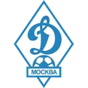
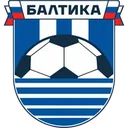

Рубин — Акрон прогноз на матч 28 ноября
Расчёт модели
- 1,6 : 1,0ожидаемые голы
- 46 %тотал больше 2,5
- 49 %обе забьют
Цифры считает модель по данным сайта, а не эксперт. Это вероятности, а не гарантия исхода. Как считает модель · словарь терминов.
- ТурнирРПЛ
Коротко о матче
К игре обе команды подходят с сериями: Рубин — 3 победы подряд, Акрон — 3 поражения подряд. По форме разница заметная: в пяти последних матчах Рубин — 3 победы, Акрон — 1 победа. Слабое место — оборона: Акрон — в среднем 1,6 пропущенного мяча за игру в этих пяти матчах, так что у соперника будут моменты.
Матчи этих команд обычно скупы на голы: больше 2,5 мячей — лишь в 5 из 16 последних. Стоит учесть и площадку: дома Рубин — 3 победы в 8 матчах, на выезде Акрон — ни одной победы в 8. В последний раз команды встречались 1 августа 2026 года: Акрон — Рубин 1:2.
По расчёту модели фаворит — Рубин: 52 % на победу. Это оценка по данным, а не обещание исхода.
Стартовые составы
- 38Staver
- 71Самошников
- 2Игоревич
- 5Вуячич
- 98Константинович
- 12Арройо
- 7Babaev
- 14Сааведра
- 6Iwu
- 8Йочич
- 10Сальседо
Ожидаемый состав — как в последнем матче с «Зенит», 21 ноября. Официальный появится примерно за час до начала.
- 88Казимирович
- 89Юрьевич
- 24Неделчару
- 26Жуан
- 13Бардыбахин
- 22Марадишвили
- 15Лончар
- 8Бистрович
- 99Олегович
- 9Тедич
- 71Пестряков
Ожидаемый состав — как в последнем матче с «Факел», 21 ноября. Официальный появится примерно за час до начала.
Отдых и расписание
У обеих команд по 6 дней отдыха.
 Рубинхозяева
Рубинхозяева
- 6дней отдыха
- 2матча за 7 днейвключая этот
- 2-йдомашний матч подряд
- 8дней до следующегоКраснодар
Прошлый матч: 21.11, Рубин — Зенит 3:1
Акронгости
- 6дней отдыха
- 2матча за 7 днейвключая этот
- 1-йвыездной матч подряд
- 6дней до следующегоОренбург
Прошлый матч: 21.11, Акрон — Факел 0:2
Отдых считаем от начала прошлого матча. Еврокубок через 3–4 дня после матча — частая причина ротации.
Форма: последние матчи
Рубин 3 победы из 5
 П0:4
П0:4 П0:2
П0:2 В1:0
В1:0- В1:0
- В3:1
Акрон 1 победа из 5
 Н1:1
Н1:1
В3:1
П1:2- П1:2
- П0:2
Кто в форме
Больше всего голов и передач в последних матчах команды (все турниры).
Рубинза 5 последних матчей
| Игрок | Г | П | Г+П |
|---|---|---|---|
| Ulvi Babaev | 1 | 1 | 2 |
| Велдин Ходжа | 1 | 0 | 1 |
| Игор Вуячич | 1 | 0 | 1 |
| Тесленко, Егор Игоревич | 1 | 0 | 1 |
| Эдди Сальседо | 1 | 0 | 1 |
Акронза 5 последних матчей
| Игрок | Г | П | Г+П |
|---|---|---|---|
| Шуманский, Артём Олегович | 2 | 1 | 3 |
| Слободан Тедич | 0 | 2 | 2 |
| Maksim Boldyrev | 1 | 0 | 1 |
| Roberto Fernández | 1 | 0 | 1 |
| Кристиян Бистрович | 1 | 0 | 1 |
Дома и в гостях
Хозяева — в своих домашних матчах, гости — в выездных. Чемпионат этого сезона.
| Акронв гостях | ||
|---|---|---|
| Матчей | 8 | 8 |
| Побед | 3 из 8 | 0 из 8 |
| Ничьих | 2 | 5 |
| Забивают за игру | 1,2 | 1,1 |
| Пропускают за игру | 1,2 | 1,5 |
| Тотал больше 2,5 | 38% | 50% |
| Обе забили | 62% | 75% |
| «Сухих» матчей | 12% | 12% |
Жирным — лучшее из двух.
Личные встречи
- Акрон1:2Рубин
- Рубин1:1Акрон
- Акрон2:2Рубин
Положение в таблице
| Команда | Место | И | В | Н | П | Голы | Очки |
|---|---|---|---|---|---|---|---|
| 7 | 15 | 5 | 6 | 4 | 17:19 | 21 | |
| Акрон | 15 | 15 | 2 | 6 | 7 | 17:27 | 12 |
Другие матчи РПЛ в этот день
Куда дальше
Материалы носят информационный характер и не гарантируют результат. Реклама букмекеров на сайте не размещается. Сайт только для совершеннолетних (18+).